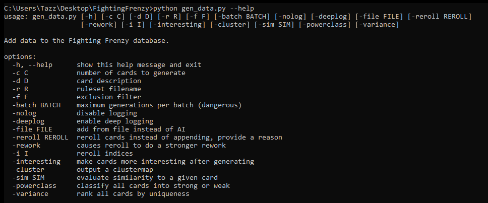

Due to the limited input bandwidth (called "context") available to a GPT-3 prompt, it wasn't possible for cards to be generated in a way that was aware of all existing pre-generated cards. Because of this, very similar cards tended to be generated repeatedly across different batches, especially when asking for a specific theme or keyword. For example, when asked for poison cards, almost any batch would contain a couple baseline "deal damage and apply poison" cards.
In order to facilitate a more interesting and diverse set of card effects, I built an automated pipeline to cull these similar cards and replace them with new, more unique cards. This system utilized a GPT-3 endpoint that generates an embedding from a given text string -- a numerical representation of the neural network's understanding of the concept represented by that text.
By computing embeddings for all of our generated cards and then comparing them via various distance functions, we're able to get a rough idea of which cards are similar to which other cards. We can then automate a process that eliminates cards that are too close together in the embedded space, condensing clusters of very similar cards into a single representative card. Additionally, if we wish to maintain the overall distribution of card effects, we can ask GPT-3 to re-generate thematically similar but mechanically distinct versions of the removed cards, and repeat the process until satisfied with the overall variety and distribution of cards.